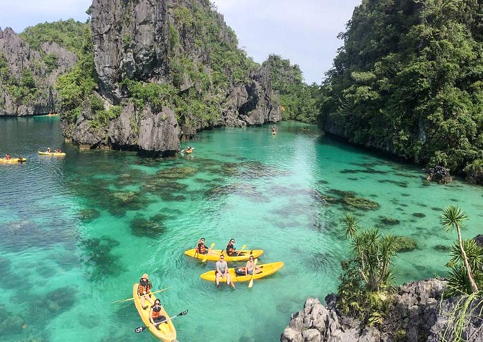

Gear & Planning • Philippines
What to Pack for a Philippine Adventure
Bring breathable clothes, rain protection, sun protection, insect repellent, a reusable water bottle, personal medicines, and copies of reservations or permits.
Helpful reminders
- Check official park announcements and local weather before visiting.
- Pack lightweight and breathable clothing for warm weather.
- Bring rain protection for sudden tropical showers.
- Use sunscreen, a hat, and sunglasses for sun protection.
- Carry insect repellent for mosquitoes and other insects.
- Bring a reusable water bottle and enough drinking water.
- Pack personal medicines and basic first-aid supplies.
- Keep copies of reservations, permits, and identification.
- Bring extra clothes and waterproof bags for important belongings.
- Check your packing list before leaving home.
- Follow posted rules and instructions from park staff or guides.
- Respect nature and local communities; take all trash with you.